Skills & Tools
Languages
Techniques
Tools & Platforms
Focus Areas
Projects
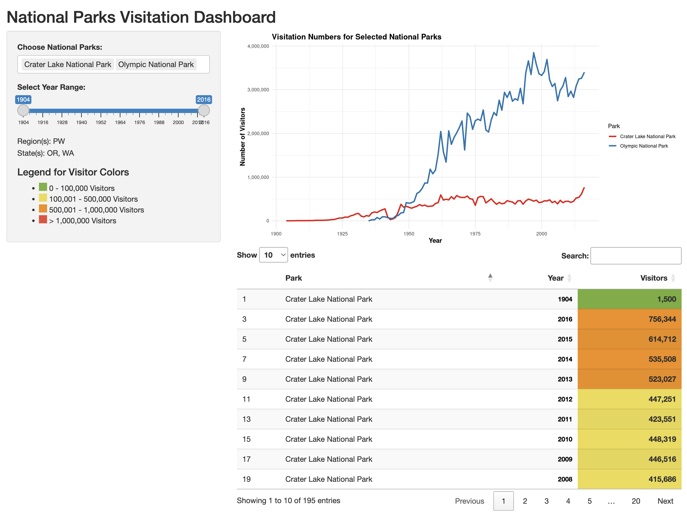
National Parks Dashboard
Sep 2024Interactive Shiny dashboard exploring NPS visitation trends across parks, states, and time periods.
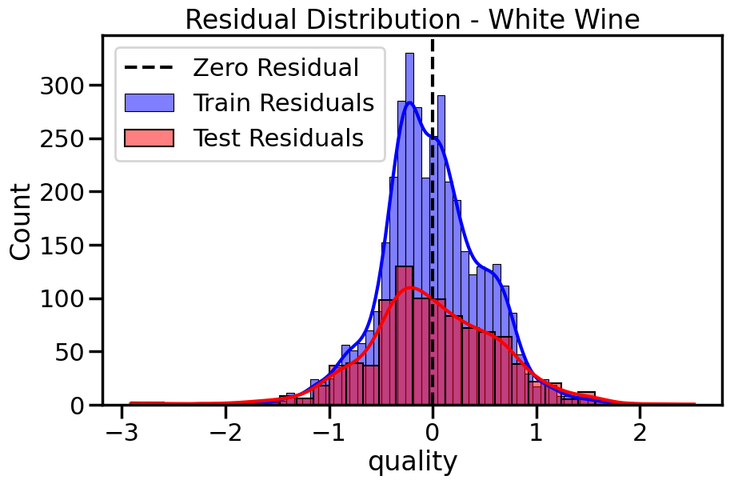
Wine Quality Analysis
Nov 2024Predicts wine quality ratings in Python by comparing logistic regression, decision trees, and random forests on physicochemical properties.
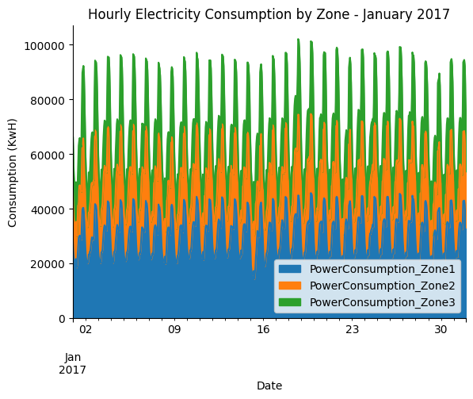
Electricity Consumption
Feb 2025Analyzes U.S. electricity consumption by sector and source, transforming raw EIA data into stacked area charts with a Python ETL pipeline.
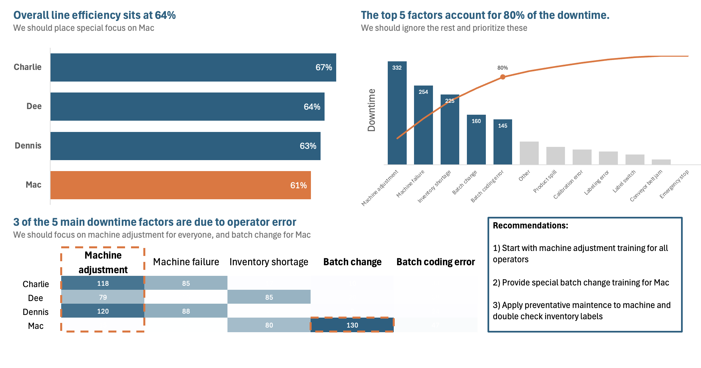
Manufacturing Downtime Analysis
Feb 2025Identifies root causes of production downtime with an Excel BI dashboard tracking machine failures, shift patterns, and operator performance metrics.
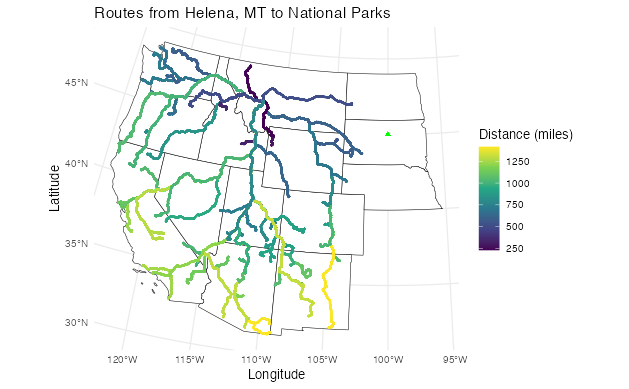
National Parks Analysis
Aug 2024Explores 20+ years of NPS visitation data with R, uncovering seasonal trends, regional disparities, and the pandemic's measurable impact on park attendance.
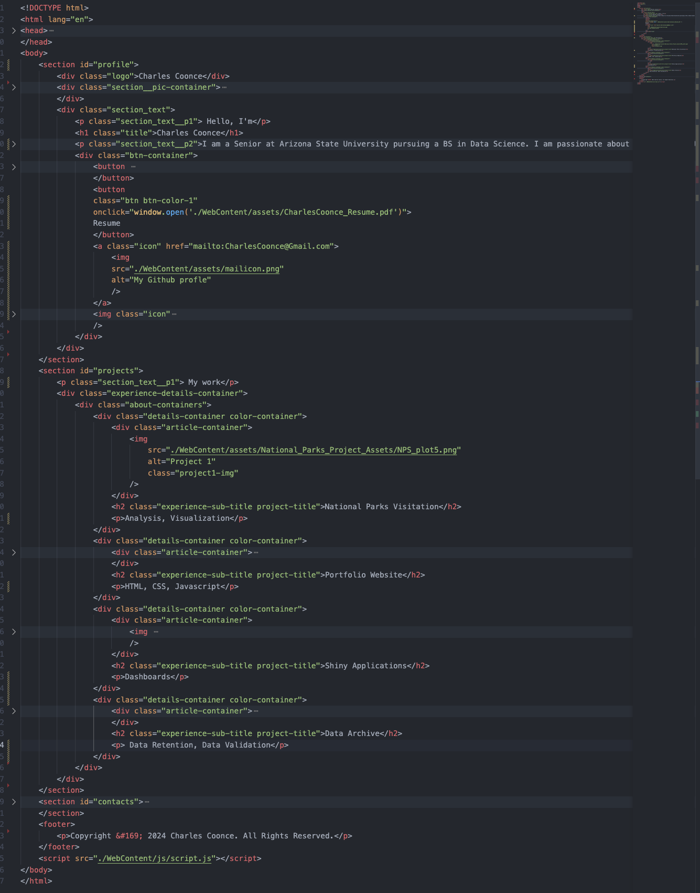
Portfolio Website
Aug 2024Responsive personal portfolio built with vanilla HTML, CSS, and JavaScript, featuring a filterable project gallery, testimonial carousel, and mobile-friendly navigation.
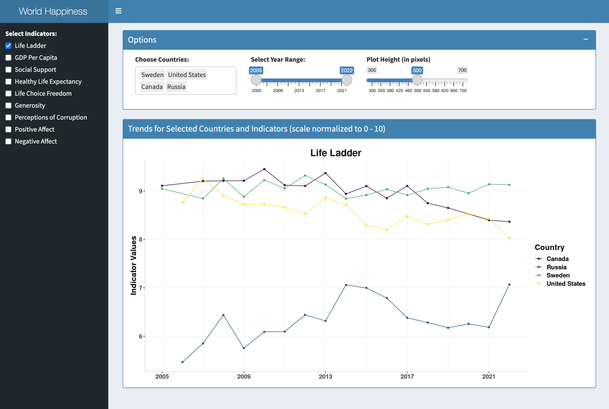
World Happiness Dashboard
Sep 2024Interactive Shiny dashboard exploring World Happiness Report data, letting users compare GDP, social support, and freedom scores across 150+ countries.
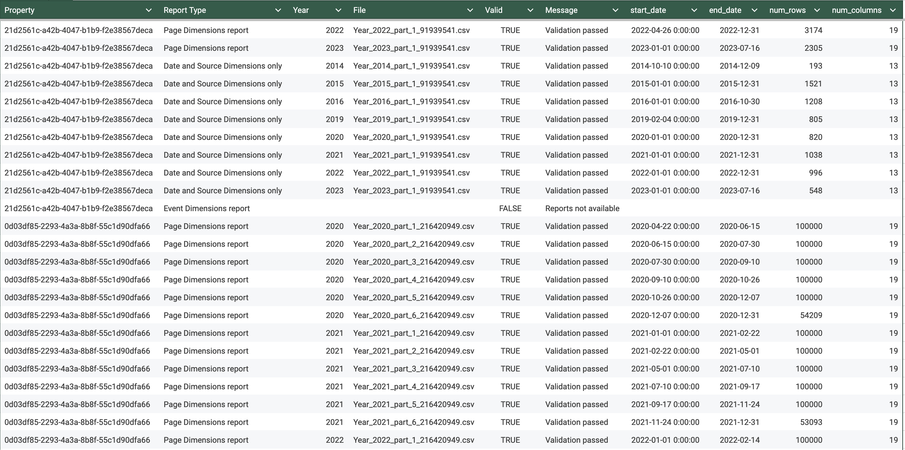
Data Archive
Dec 2024Automates extraction and archiving of Google Analytics data with Python, preserving historical web metrics in a structured, queryable format for long-term analysis.
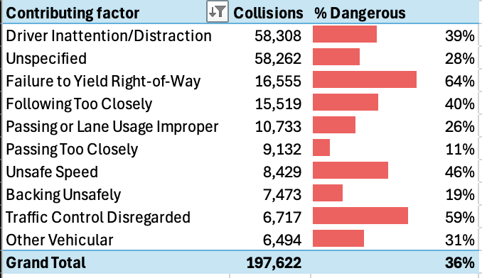
NYC Collision Analysis
Feb 2025Analyzes 1.8M+ NYC traffic collisions in Excel to surface the most dangerous contributing factors, high-risk boroughs, and peak collision time windows.
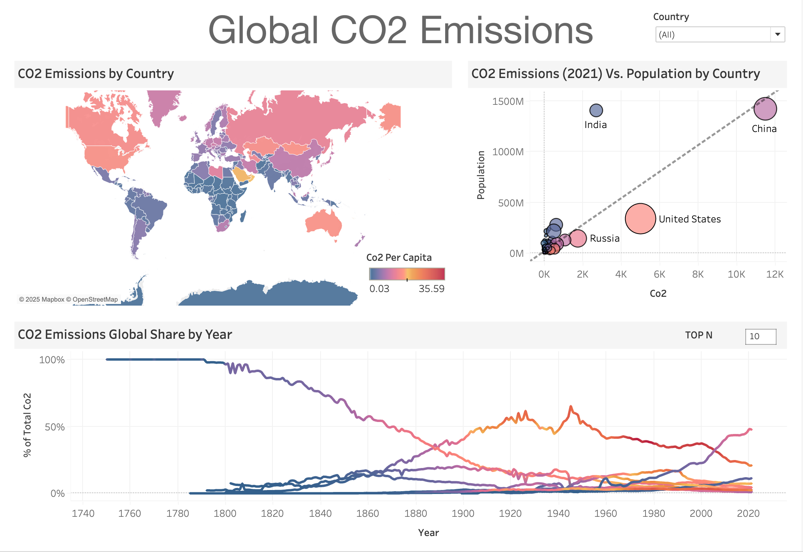
Global CO2 Emissions
Feb 2025Tableau dashboard tracking global CO2 emissions by country and sector from 1750–2020, spotlighting the largest emitters and per-capita disparities over time.
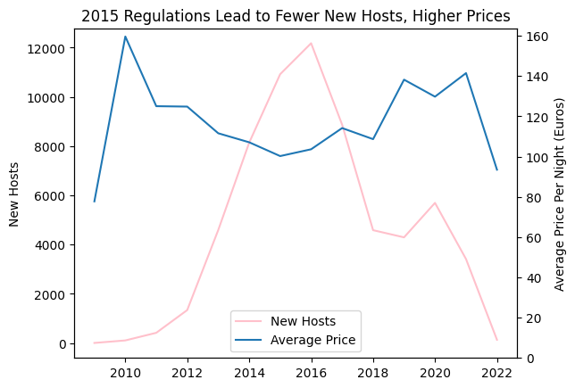
AirBnB Listing Analysis
Feb 2025Analyzes Airbnb listing data with Python to uncover pricing drivers, occupancy patterns, and neighborhood-level revenue trends across major markets.
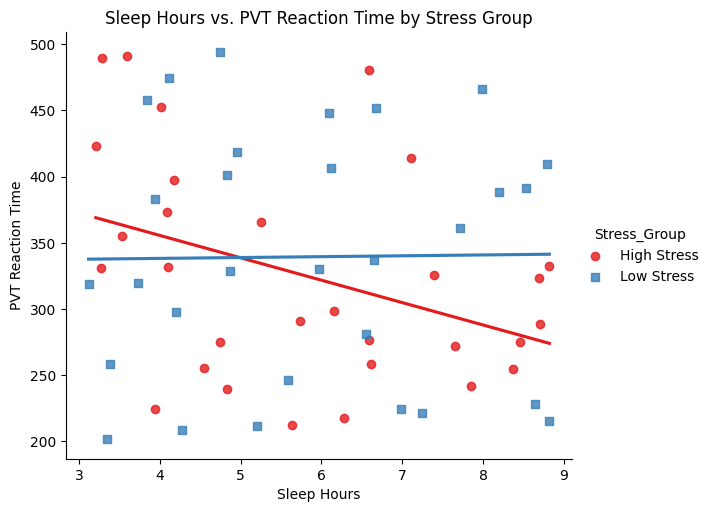
Sleep Deprivation Analysis
Feb 2025Investigates the relationship between sleep deprivation and high-stress reaction times using Python, identifying statistically significant performance thresholds.
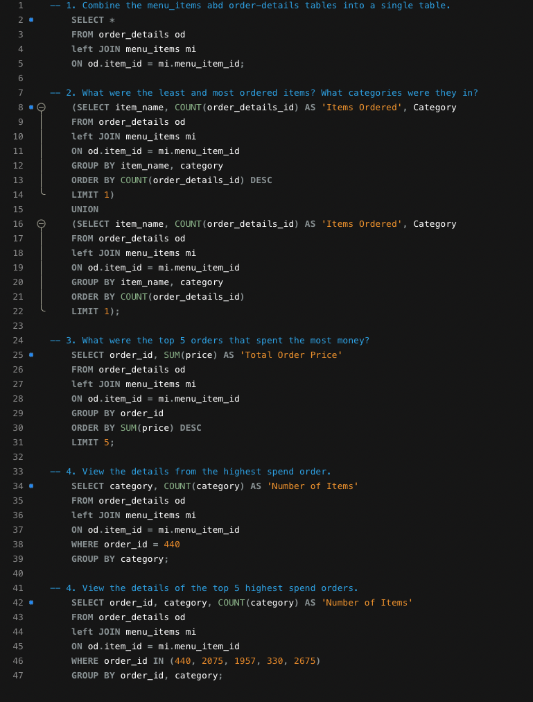
Restaurant Order Analysis
Mar 2025Uses SQL joins and aggregations to analyze restaurant order data, revealing peak ordering windows, top menu items, and revenue concentration by category.
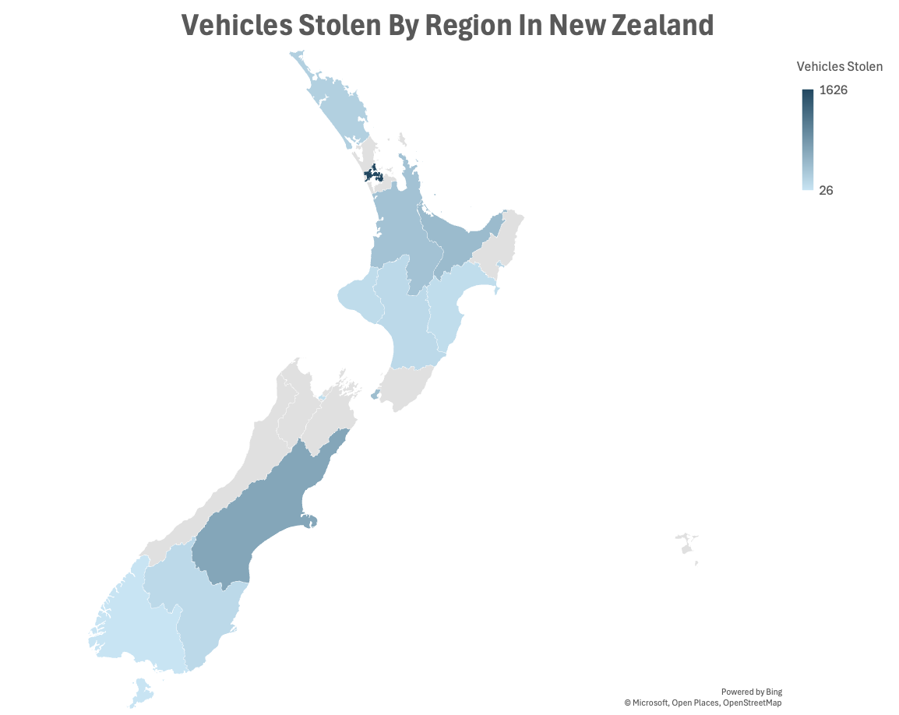
Motor Vehicle Thefts
Mar 2025Combines SQL and Excel to analyze motor vehicle theft patterns by make, model year, location, and time of day across New Zealand's national dataset.
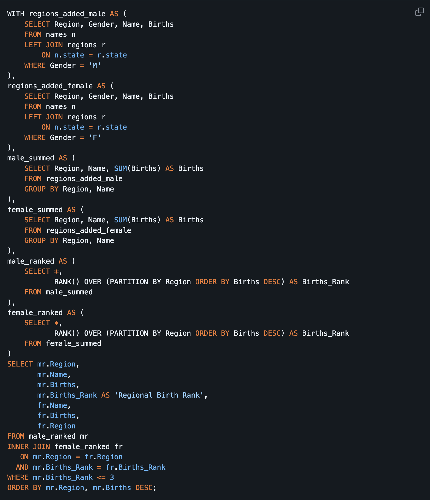
Baby Names Analysis
Mar 2025Queries 140 years of U.S. baby name data with SQL to track generational naming trends, pop culture influences, and regional popularity shifts.
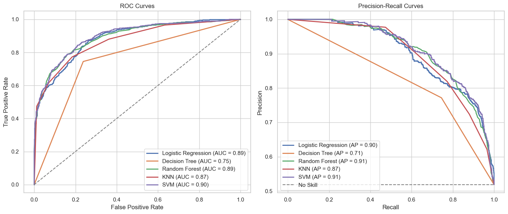
Spaceship Titanic Classification
May 2025Builds and evaluates binary classification models for the Spaceship Titanic Kaggle competition, optimizing ROC-AUC and precision-recall tradeoffs with ensemble methods.
Oura Ring Health Data Pipeline
Mar 2026ELT pipeline that extracts Oura Ring health data via API, loads it into Snowflake as semi-structured JSON, and transforms it through dbt into analysis-ready tables — orchestrated by Dagster with daily partitions.
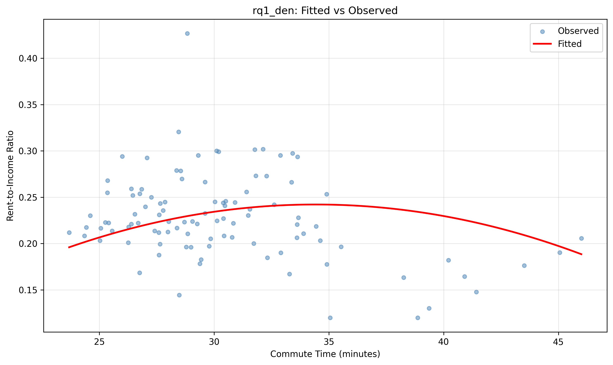
Housing Affordability & Commute Tradeoffs
Dec 2025Integrates housing price, income, and commute data across U.S. metros to model affordability tradeoffs using ETL pipelines, machine learning regression, and statistical visualization.
Ask Me Anything
Have a question about my projects, skills, or experience? Ask my AI assistant.
Testimonials
During his time as an IT intern at OneAmerica Financial, he demonstrated exceptional people skills, a strong work ethic, and a genuine passion for technology."
Director of Business Analysis
One America Financial
Charles' approach was thorough, well planned, and inclusive of his team. His demeanor while leading some difficult project meetings was positive and encouraging, despite the challenges presented by others, and showed both polish and empathy."
IT Business Planning Consultant
One America Financial
He collaborated and communicated well, focused on what his stakeholders wanted, and demonstrated interpersonal savviness and adaptability."
Business Relationship Management Director
One America Financial
He consistently sought out new challenges and opportunities to learn, which is a testament to his passion.
Training Director
Montana Electrical Training Center
He flourished, working his way up to senior level instructor and assistant director, where he has learned all aspects of the training center.
Owner
Eagle Electric
His leadership qualities, passion, and work ethic show in the many hats Charles wears every day to help better Montana’s apprentices, the Local, and the IBEW.
Business Manager
Local Union 233
Working under pressure is an attribute most common with Charles. When things need to be done at the eleventh hour, Charles is just the perfect fit for the job. He is a practicable person that relates theories to real life situation. Charles is a professional at what he does, with the absolute objective of recording success.
Project Manager
Mechanical Technologies Inc.
Get in Touch
Interested in working together or have a question? Reach out below.